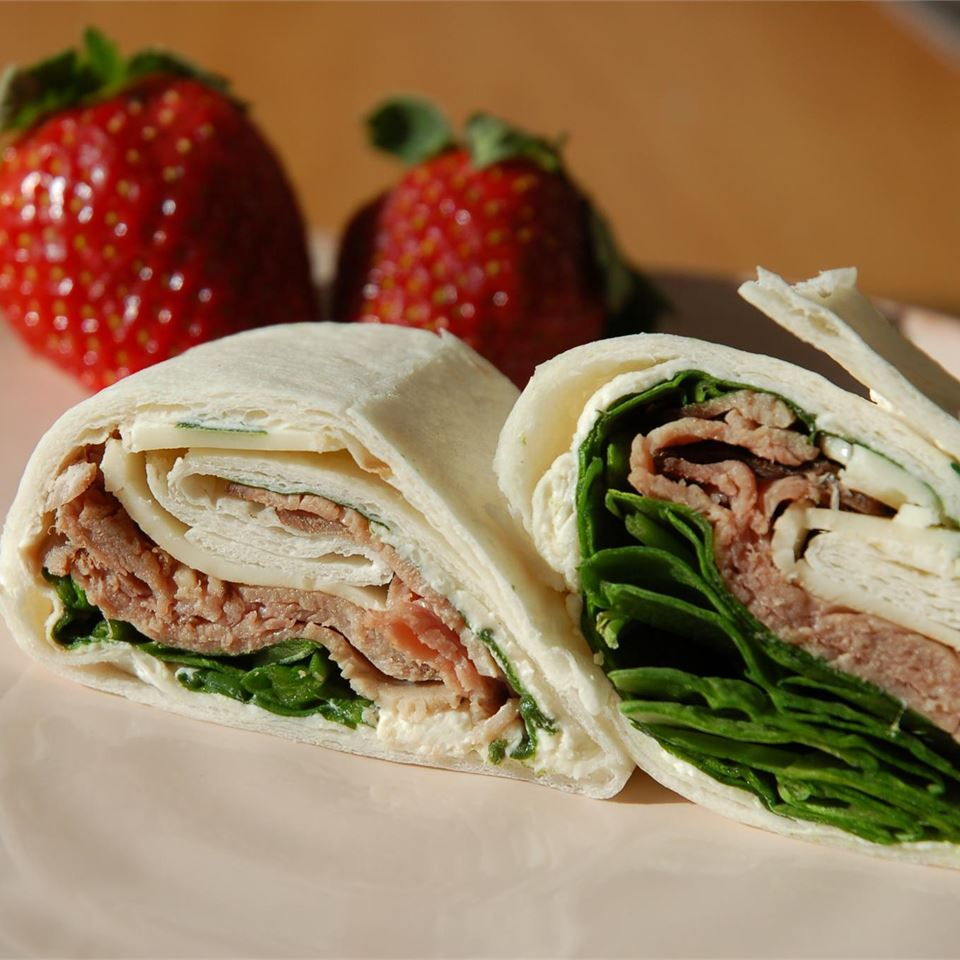

Beef and Swiss Wrap recipes

Description
Using multi-grain wraps with thin slices of roast beef and cheese along with veggies makes this a healthy lunch on the go. It's like a salad in a wrap!
Ingredents
- 2 multi grain wraps
- 2 tablespoons Neufchatel cheese
- 2 leaves romaine lettuce
- 1 cup fresh spinach
- 6 slices deli sliced roast beef
- 2 slices reduced-fat Swiss cheese
- 6 cherry tomatoes, halved
- ground black pepper to taste
Steps
- Heat the wraps in the microwave on High for 30 seconds.
- On the right side of one wrap (the side that will fold in last), spread 1 tablespoon Neufchatel cheese about 2/3 of the way down that side.
Layer half of the romaine, spinach, beef, Swiss cheese, and tomatoes in the center of the wrap, leaving 1/3 of the wrap open at the bottom.
Fold that third up over the bottom of your fillings, then fold in the left side and roll toward the right, letting the Neufchatel seal the wrap together. Repeat with the second wrap.